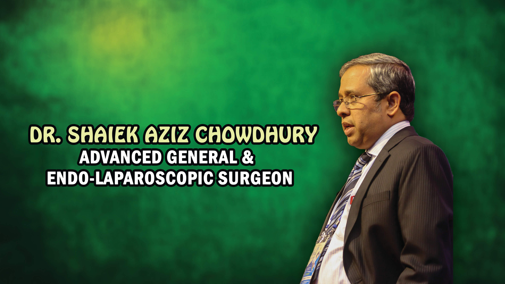

About
Dr. Shaiek Aziz Chowdhury is working as General & Laparoscopic Surgeon in Sylhet, Bangladesh and is a dedicated soul to the service of people of Sylhet.
He is currently working as Associate Professor, in the Department of Surgery in Jalalabad Ragib-Rabeya Medical College, Sylhet.
He passed his SSC examination from Chittagong Collegiate school in 1982 and HSC examination from Chittagong College in 1984.
He achieved his MBBS degree in 1991 from Sylhet MAG Osmani Medical College by obtaining 15th position under Chittagong university.
He entered into the world of surgery by obtaining FCPS degree in July, 1998....
He served in different government medical colleges, among them which includes Sylhet MAG Osmani Medical college and Khulna Medical college.
During his professional career, he obtained many training at home (2years training in BIRDEM Hospital under Professor Motiur Rahman with the supervision of Pioneer Laparoscopic Surgeon of Bangladesh, Professor Sarder A. Nayeem, and 3months training under Professor Nabi Alam Khan in Chest Disease Hospital, Dhaka)
and abroad (from Malaysia, Thailand, India etc).
Besides, he is also a life member of SELSB, SOSB, and Bangladesh Society of Colon and Rectal Surgeries (BSCRS).
Among international organizations, he is also a member of ELSA, APHS, ACRSI ,and AMASI INDIA and associate life member of ASI INDIA.
In course of time, he performed more than 16000 laparoscopic surgeries, which includes many challenging procedures.
He is the pioneer 3D 4K Laparoscopic Surgeon in Bangladesh.
He uses all sorts of latest advanced energy devices like Harponic Scalpel, Enseal, Ligasure, Thunderbeat, etc.
These are compatible with all international high standard surgical devices (In Bangladesh, these technologies are only available in Popular Medical Center and Hospital, Subhanighat, Sylhet).
He also performed laser surgery in the case of piles, anal fissure, fistula, etc.
Read more
Achievements

Fellowship of College of Physicians and Surgeons (FCPS in surgery)
Awarded by Bangladesh College of Physicians and Surgeons (BCPS) in July, 1998

Pioneer of 3D 4K Laparoscopic Surgery in Bangladesh
Dr. Shaiek was the first person to take the initiative to bring 3D 4K Laparoscopy in Bangladesh
Videos

Laparoscopic Pylolithotomy by Dr. Shaiek, Bangladesh
Dr. Shaiek's most viewed YouTube video with over 85 thousand views.
Watch on Youtube
Laparoscopic Deroofing of Right Renal cyst
Dr. Shaiek's second most viewed YouTube video with over 43 thousand views.
Watch on Youtube
7th pod of Longo operation per rectal bleeding
Dr. Shaiek's third most viewed YouTube video with over 25 thousand views.
Watch on Youtube